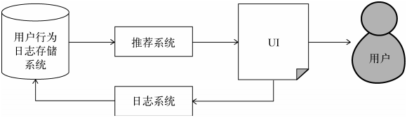
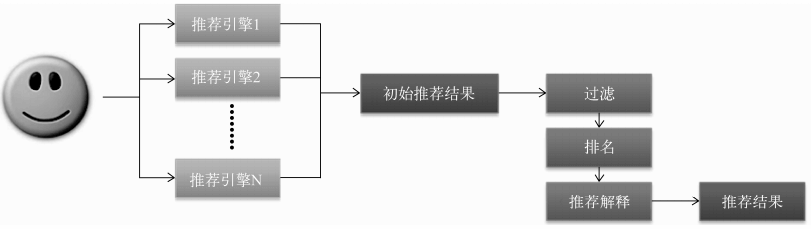
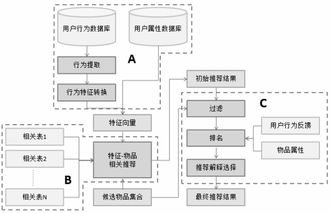

一、 外围架构

开发者要通过UI展示的过程向用户推广网站并通过记录用户行为日志获得用户的反应，这就涉及到推荐系统和用户行为数据的存储。
在用户数据的收集和存储中，能否实时获取数据用以推荐系统非常重要，所以，在收集数据时，就要把需要实时存取的数据和不需要实时存取的数据分开存储。
一般来说，需要实时存取的数据存储在数据库和缓存中，不需要实时存取的数据存储在分布式文件系统中。
二、 推荐系统架构
1. 推荐系统核心任务
(1) 为给定用户生成特征（人口统计学特征、用户行为特征、用户的话题特征等）
(2) 根据特征找到物品
推荐系统需要由多个引擎组成，每个推荐引擎负责一类特征和一种任务。

好处：
a. 可以方便地增加/删除引擎
b. 可以实现推荐引擎级别的用户反馈
三、 推荐引擎架构
主要包括三部分：
a. 从数据或者缓存中拿到用户行为数据，通过分析不同行为，生成当前用户的特征向量
b. 将用户特征向量通过特征-物品相关矩阵转化为初始推荐物品列表
c. 对初始的推荐列表进行过滤、排名等处理，从而生成最终的推荐结果

1. 生成用户特征向量
要考虑的因素：
a. 用户行为种类
b. 用户行为产生的时间
c. 用户行为的次数
d. 物品的热门程度
2. 特征-物品相关推荐
根据离线的相关表得到初始的物品推荐列表，这时就要用上各种算法计算物品之间的相似度、相关性等参数。
（上图中有个“候选物品集合”，主要是想在某些情况下，将推荐的物品限定在一个范围内）
物品推荐模块除了要给出推荐物品外，还要注意给出解释列表。
3. 过滤模块
会被过滤的物品：
a. 用户已经产生过行为的物品
b. 候选物品以外的物品（一般是用户施加的一些条件）
c. 某些质量很差的物品
4. 排名模块
(1) 新颖性排名（不知道的、长尾的）
要在推荐引擎的各个部分考虑新颖性问题。
思路：可以给热门物品降权处理进行新颖性排名
(2) 多样性
让推荐结果覆盖尽可能多的用户兴趣。
几种方法：
a. 将推荐结果按照某种物品的内容属性分为几类，然后再唉每个类中都选择该类中排名最高的物品组合成最终的生成列表。（缺点是类别分类具有主观性）
b. 控制不同推荐结果的推荐理由出现的次数。（尽量让推荐理由不同）
(3) 时间多样性
保证用户不要每天来推荐系统都看到同样的推荐结果。
入手：
a. 要保证推荐系统的实时性
b. 要在用户没有行为时也能变化推荐结果
(4) 用户反馈
主要是通过分析用户之间和推荐结果的交互日志，预测用户会对什么样的推荐结果比较感兴趣。
如果推荐系统的目标是提高用户对推荐结果的点击率，那么可以利用点击模型预测用户是否会点击推荐结果。
（为了提高在线预测效率，一般可以使用线性模型）